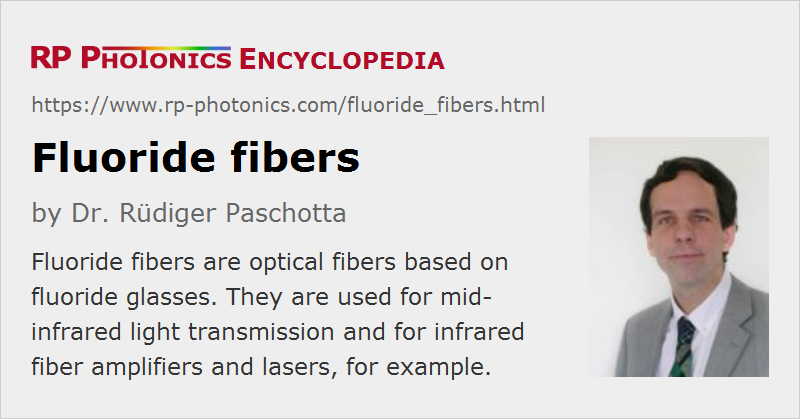

Fluoride Fibers
Definition: optical fibers based on fluoride glasses
More general term: optical fibers
German: Fluoridglasfasern
Categories: optical materials, fiber optics and waveguides
How to cite the article; suggest additional literature
Author: Dr. Rüdiger Paschotta
Fluoride fibers are optical fibers based on fluoride glasses, e.g. fluoroaluminate or fluorozirconate glasses. The cations of such glasses are usually from heavy metals such as zirconium or lead. Fluorozirconate glasses (where ZrF4 is the major component) are a typical example, and among them ZBLAN glass (ZrF4-BaF2-LaF3-AlF3-NaF) is the most common. Such fibers can be doped with a number of rare earth ions for application in fiber lasers and amplifiers. There are also indium fluoride fibers (fluoroindate fibers) with improved infrared transmission at longer wavelengths.
The heavy glass constituents lead to low phonon energies. The most important consequences of this are:
- Fluoride fibers exhibit a high optical transparency at mid-infrared wavelengths, whereas the common silica fibers absorb light beyond ≈ 2 μm.
- Rare earth dopant ions in fluoride glasses as host media exhibit a strongly reduced tendency for quenching processes caused by multi-phonon transitions. Therefore, the lifetimes of various metastable electronic levels can be strongly increased compared with silica fibers, allowing the realization of certain lasers (see below).
Compared with other fibers for mid-infrared transmission, fluoride fibers have a relatively low refractive index and low chromatic dispersion.
Applications of Fluoride Fibers
The initially envisaged application of fluoride fibers was optical fiber communications, because the intrinsic losses of a mid-IR fiber could in principle be lower than those of silica fibers, which are transparent only up to ≈ 2 μm. However, such low losses as those of silica fibers have not been achieved in practice, and the brittleness and high cost of fluoride fibers also did not support a commercialization in this direction. Later, the utility of fluoride fibers for various other applications was discovered. The first group of these applications again exploits the mid-infrared transparency of fluoride glasses (→ mid-infrared fibers); examples are mid-infrared laser spectroscopy, fiber-optic sensors, thermometry, and imaging. Also, fluoride fibers can be used to transport light e.g. for Er:YAG lasers at 2.9 μm, as required for medical applications e.g. in ophthalmology and dentistry. In that area, there are also oxide fibers as a possible alternative, in particular germanate glasses, which also contain heavy metals.
On the other hand, the largely suppressed multi-phonon transitions in fluoride glasses are very important for the realization of various kinds of fiber lasers and amplifiers, essentially because the upper-state lifetimes of various rare earth dopants become long enough for various laser transitions, particularly in upconversion lasers. For example, thulium-doped fluoride fibers can be used for blue upconversion lasers [6, 13, 14], and erbium-doped fluoride fibers for green upconversion lasers [4]. Praseodymium-doped fluoride fibers can be used in 1.3-μm amplifiers [7] and also for visible fiber lasers with red, orange, green or blue emission [3, 8, 10]. Erbium-doped fluoride glass can be used for realizing 3-μm fiber lasers [17], and also 1.5-μm amplifiers with a wider and flatter gain compared with that of silica-based erbium-doped fiber amplifiers (EDFAs) [16]. It is also possible to combine silica-based and fluoride fibers.
Some fluoride fibers are used for supercontinuum generation in the mid-infrared region, reaching out to wavelengths of several micrometers [21]. Again, the good infrared transmission resulting from the low phonon energy is the key to those achievements, but a suitable location of the zero dispersion wavelength is also important.
Problems with fluoride fibers are that they are often (but not always) expensive and difficult to handle due to their fragility (not allowing, e.g., strong bending) and (partly) limited chemical stability. Typically, they are hygroscopic. For high-power mid-infrared laser sources based on fluoride fibers, the hygroscopic nature can lead to a limited device lifetime, related to a steady increase of absorption by indiffusion of water / OH; this may be prevented with core-less end caps having a diffusion barrier film made of silicon nitride (Si3N4) [22].
Suppliers
The RP Photonics Buyer's Guide contains 3 suppliers for fluoride fibers.
Questions and Comments from Users
Here you can submit questions and comments. As far as they get accepted by the author, they will appear above this paragraph together with the author’s answer. The author will decide on acceptance based on certain criteria. Essentially, the issue must be of sufficiently broad interest.
Please do not enter personal data here; we would otherwise delete it soon. (See also our privacy declaration.) If you wish to receive personal feedback or consultancy from the author, please contact him e.g. via e-mail.
By submitting the information, you give your consent to the potential publication of your inputs on our website according to our rules. (If you later retract your consent, we will delete those inputs.) As your inputs are first reviewed by the author, they may be published with some delay.
Bibliography
| [1] | D. Tran et al., “Heavy metal fluoride glasses and fibers: A review”, IEEE J. Lightwave Technol. 2 (5), 566 (1984), doi:10.1109/JLT.1984.1073661 |
| [2] | W. J. Miniscalco et al., “1.3 μm fluoride fiber laser”, Electron. Lett. 24, 28 (1988), doi:10.1049/el:19880019 |
| [3] | R. B. Smart et al., “CW room temperature upconversion lasing at blue, green and red wavelengths in infrared-pumped Pr3+-doped fluoride fibre”, Electron. Lett. 27 (14), 1307 (1991), doi:10.1049/el:19910817 |
| [4] | T. J. Whitley et al., “Upconversion pumped green lasing in erbium doped fluorozirconate fibre”, Electron. Lett. 27 (20), 1785 (1991), doi:10.1049/el:19911110 |
| [5] | J. Y. Allain et al., “Tunable cw lasing around 610, 635, 695, 715, 885 and 910 nm in praseodymium-doped fluorozirconate fibre”, Electron. Lett. 27, 189 (1991), doi:10.1049/el:19910121 |
| [6] | S. G. Grubb et al., “CW room-temperature blue upconversion fibre laser”, Electron. Lett. 28, 1243 (1992), doi:10.1049/el:19920785 |
| [7] | T. Whitley et al., “High output power from an efficient praseodymium-doped fluoride fiber amplifier”, IEEE Photon. Technol. Lett. 5 (4), 401 (1993), doi:10.1109/68.212678 |
| [8] | A. C. Tropper et al., “Analysis of blue and red laser performance of the infrared-pumped praseodymium-doped fluoride fiber laser”, J. Opt. Soc. Am. B 11 (5), 886 (1994), doi:10.1364/JOSAB.11.000886 |
| [9] | Y. Miyajima et al., “Rare-earth-doped fluoride fiber amplifiers and fiber lasers”, Opt. Fiber Technol. 1, 35 (1994), doi:10.1006/ofte.1994.1004 |
| [10] | P. Xie and T. R. Gosnell, “Room-temperature upconversion fiber laser tunable in the red, orange, green, and blue spectral regions”, Opt. Lett. 20 (9), 1014 (1995), doi:10.1364/OL.20.001014 |
| [11] | T. Sakamoto et al., “35-dB gain Tm-doped ZBLYAN fiber amplifier operating at 1.65 μm”, IEEE Photon. Technol. Lett. 8, 349 (1996), doi:10.1109/68.481113 |
| [12] | H. M. Pask et al., “A Pr3+-doped ZBLAN fibre upconversion laser pumped by an Yb3+-doped silica fibre laser”, Opt. Commun. 134 (1–6), 139 (1997), doi:10.1016/S0030-4018(96)00549-4 |
| [13] | R. Paschotta et al., “Characterization and modeling of thulium:ZBLAN blue upconversion fiber lasers”, J. Opt. Soc. Am. B 14 (5), 1213 (1997), doi:10.1364/JOSAB.14.001213 |
| [14] | R. Paschotta et al., “230 mW of blue light from a Tm-doped upconversion fibre laser”, JSTQE 3 (4), 1100 (1997) (invited paper) |
| [15] | M. Poulain, “Fluoride glass fibers: applications and prospects”, Proc. SPIE 3416, 2 (1998), doi:10.1117/12.323374 |
| [16] | J. F. Philipps et al., “Spectroscopic and lasing properties of Er3+:Yb3+-doped fluoride phosphate glasses”, Appl. Phys. B 72, 399 (2001), doi:10.1007/s003400100515 |
| [17] | M. Pollnau and S. D. Jackson, “Erbium 3-μm fiber lasers”, J. Sel. Top. Quantum Electron. 7 (1), 30 (2001), doi:10.1109/2944.924006 |
| [18] | J. F. Philipps et al., “Energy transfer and upconversion in erbium–ytterbium-doped fluoride phosphate glasses”, Appl. Phys. B 74 (3), 233 (2002), doi:10.1007/s003400200804 |
| [19] | E. Heumann et al., “Semiconductor-laser-pumped high-power upconversion laser”, Appl. Phys. Lett. 88, 061108 (2006), doi:10.1063/1.2172293 |
| [20] | H. Ebendorff-Heidepriem et al., “Fluoride glass microstructured optical fiber with large mode area and mid-infrared transmission”, Opt. Lett. 33 (23), 2861 (2008), doi:10.1364/OL.33.002861 |
| [21] | M. Michalska et al., “Mid-infrared, super-flat, supercontinuum generation covering the 2–5 μm spectral band using a fluoroindate fibre pumped with picosecond pulses”, Sci. Rep. 6, 39138 (2016), doi:10.1038/srep39138 |
| [22] | Y. O Aydin et al., “Endcapping of high-power 3 μm fiber lasers”, Opt. Express 27 (15), 20659 (2019), doi:10.1364/OE.27.020659 |
| [23] | H. Uehara et al., “Power scalable 30-W mid-infrared fluoride fiber amplifier”, Opt. Lett. 44 (19), 4777 (2019), doi:10.1364/OL.44.004777 |
See also: fluoride glasses, fibers, mid-infrared fibers, rare-earth-doped fibers, fiber amplifiers, fiber lasers, silica fibers, optical glasses, multi-phonon transitions, quenching
and other articles in the categories optical materials, fiber optics and waveguides
|  |
If you like this page, please share the link with your friends and colleagues, e.g. via social media:
These sharing buttons are implemented in a privacy-friendly way!